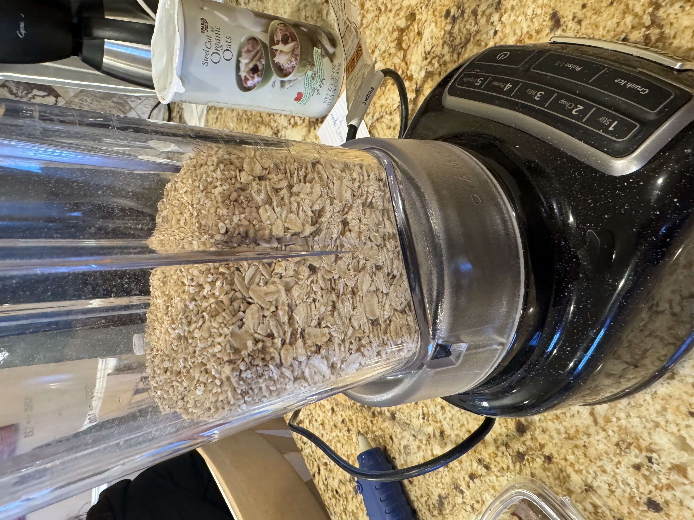
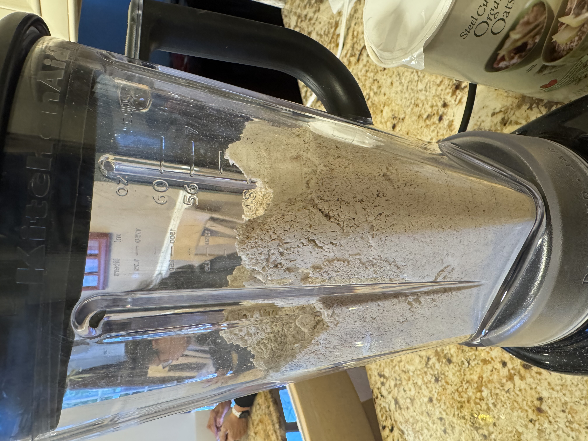
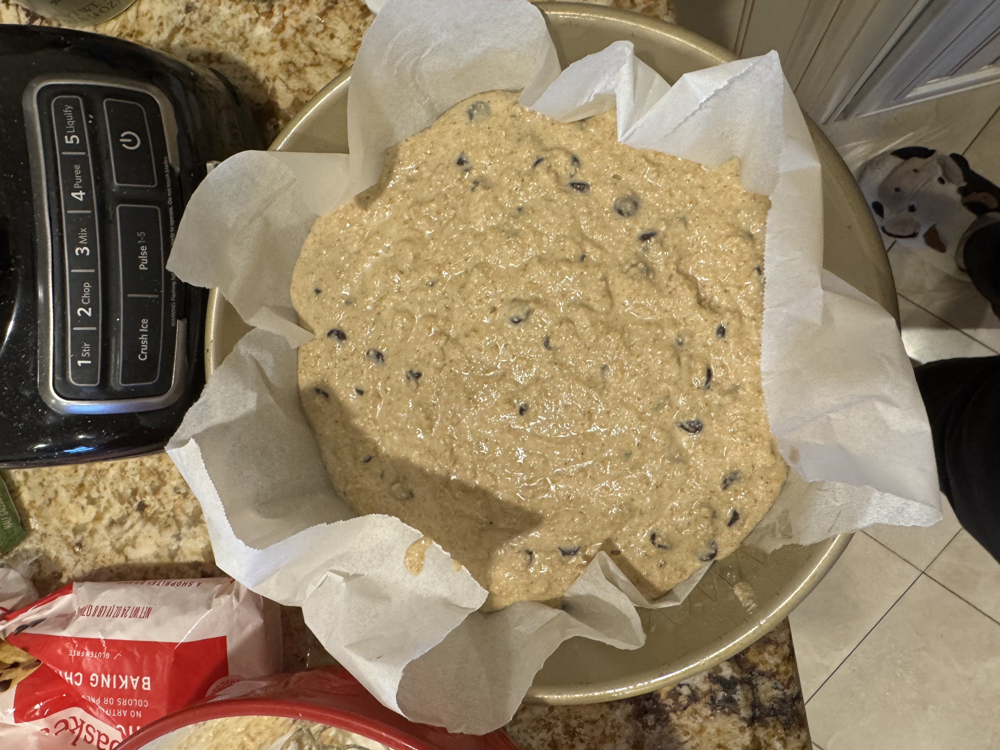
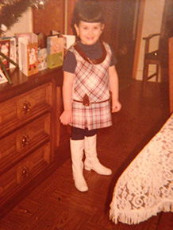
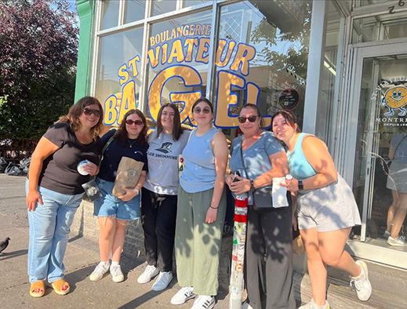
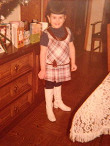
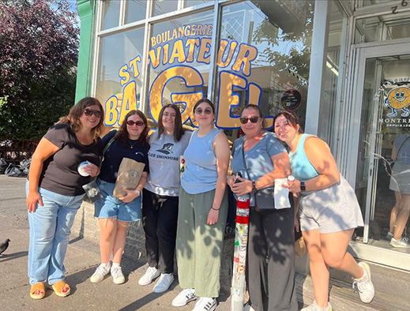

This week's recipe is dedicated to my mom (and her friend of 40+ years, Tonie). My mom is not much of a baker, but is a great chef, so us kids have always decided to take on the dessert-making. My mom's friend Tonie has always been a close family friend, as we go on road trips, shopping sprees, and more together. Whenever we make a sweet treat that we think she will enjoy, my mom invites her over. Or, if we know she is coming over, one of us is always sure to make a dessert for her.
This week, I decided to celebrate my mom and her friendship by making her a healthy, quick treat, because she works so hard on everything she does, and is always in the kitchen preparing a beautiful meal.
First, blend the oats into a flour (1). Combine with baking powder and set aside.
Melt butter, whisk eggs, and combine with milk and vanilla extract. Once fully mixed, add to the dry ingredients and mix in chocolate chips.

1

2
Bake for 15-20 minutes at 350 degrees. Enjoy!
Mom (on the left) and Tonie as kids.

Last photo before the oven!

 


